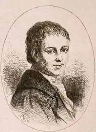

Генріх фон Клейст народився 18 жовтня 1777 у Франкфурті-на-Одері. У п'ятнадцять років він поступив на військову службу, але незабаром залишив її. Після цього Генріх вирішує вивчати математику та філософію в місцевому університеті. Відучившись три семестри, Клейст прийшов до висновку, що всі знання відносні.
Клейст стає заволокою, одержимим думкою про незбагненності людської долі. Оскільки його розум не давав готового рішення, Клейст вирішує звернутися до мистецтва. Його першим твором стала п'єса "Сімейство Шроффенштейн". Але ще до її публікації у 1803 році письменник відкинув цю драму, почавши роботу над "Роберта Гіскара".
Півтора року він працює над рукописом, але в підсумку спалює її. Після чого письменник записується в наполеонівську армію, що готувала вторгнення на Британські острови. Через рік, з підірваним здоров'ям, Клейст повернувся в Берлін. Роком пізніше в Кенігсберзі він зробив переробку галантної комедії "Амфітріон" Мольєра, а також написав реалістичну комедію "Розбитий глек". Приблизно в цей же час Клейст спробував себе у жанрі новели. Потім була написана романтична казка "Кетхен з Гейльбронна, або Випробування вогнем". Генріх фон Клейст жив і творив, незрозумілий своїми сучасниками. Він помер 21 листопада 1811 року. Смерть Клейста — подвійне самогубство, вчинене ним разом з коханою жінкою, яка наважилася на смерть через невиліковну хворобу, — підкреслює необичайність його життєвого шляху.